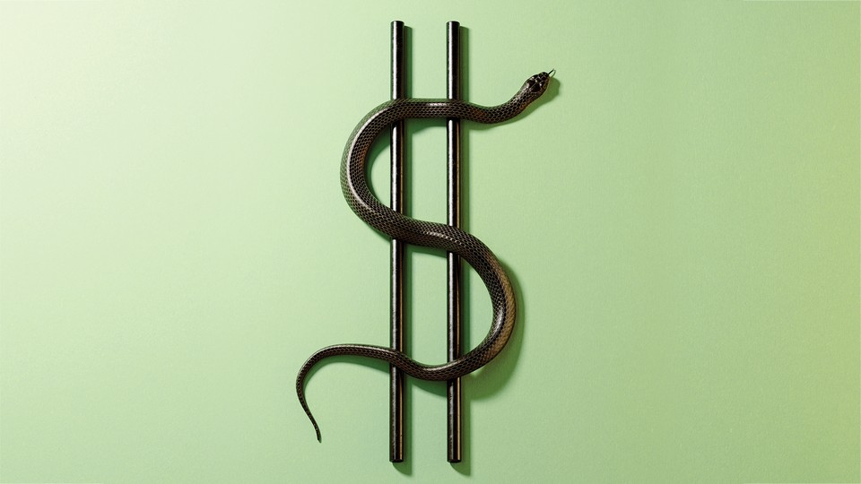

| 上一项 | 文章 | 章节 | 下一项 |
The Kleptocrats Next Door
The United States has a dirty-money problem.
by Anne Applebaum

In 2010, things started going wrong at the steel plant in Warren, Ohio, a Rust Belt town that went on to cast its votes twice for Donald Trump. A cooling panel started leaking, and the furnace operator didn’t see the leak in time; the water hit molten steel, leading to an explosion that sent workers to the hospital with burns and severe injuries. A year later, another explosion caused another round of destruction. A federal regulatory investigation turned up dozens of safety violations. “They just kept cutting corners,” one employee said. “They were running a skeleton crew. They would not hire more help.” A few years later, the plant halted operations. In January 2016, it shut down for good. Some 200 people lost their jobs.
Here, as Casey Michel writes in American Kleptocracy, is what the Warren Steel plant looks like now:
Cavernous holes gouge the siding, with peeling yellow and blue paint giving way to swaths of rust and sloshes of mud. Vacant lots and missing windows, crumpled cabinets and offices in disarray—whether trashed by looters or former employees is unclear—round out the place. The mill sits like something out of a dystopic future—or like something out of certain parts of the Soviet Union.
Michel, an American journalist, has chosen his words with care. As his book makes brilliantly clear, the mill actually is “something out of certain parts of the Soviet Union.” At the time of its demise, Warren Steel was owned by Ihor Kolomoisky, a Ukrainian oligarch. Kolomoisky is alleged to have bought it, along with hundreds of millions of dollars’ worth of other midwestern properties, as part of a money-laundering operation. According to Michel, who said that Kolomoisky declined to comment on any of the allegations in the book, the oligarch needed to move cash that had been obtained illegally into something “real,” in order to hide its origins (and perhaps use it as collateral for legitimate loans). He may also have hoped that desperation for investment in the American Rust Belt meant that the origins of his money would be overlooked. Unlike bankers, real-estate professionals in the U.S. have not always been required to examine closely the source of funds used to buy property, which is why the sector has become such a magnet for money launderers.
These were not small investments. From 2006 to 2016, companies linked to Kolomoisky acquired half a dozen steel mills, four office buildings and a hotel conference center in Cleveland, an office park in Dallas, a mothballed Motorola factory near Chicago. Money for the purchases allegedly came from the coffers of PrivatBank, a Ukrainian bank owned by Kolomoisky—and, according to Ukrainian investigators, defrauded by Kolomoisky. The money flowed into the Midwest via shell companies in Cyprus, the British Virgin Islands, and Delaware, with the assistance of the American arm of Deutsche Bank. In 2016, the flow ground to a halt. The Ukrainian government nationalized PrivatBank after determining that Kolomoisky and his inner circle had used fraudulent loans to rob the bank’s shareholders of $5.5 billion. (Kolomoisky has denied wrongdoing and is fighting the nationalization in Ukrainian court.)
Offshore havens like the Cayman Islands hide what some believe could be as much as 10 percent of global GDP.
This was a typical post-Soviet scheme. But it was made possible by a whole series of American front men. One of them, Chaim Schochet of Miami, was 23 when he started buying Cleveland real estate, to the utter delight of the city’s leaders. Mordechai Korf, also of Miami, became the CEO of Optima Specialty Steel, the company that held the industrial property purchased with Kolomoisky’s money. Both Korf and Schochet used the services of an American lawyer, Marc Kasowitz, who represented Donald Trump during the Russia probe, among other legal battles. On their behalf, Kasowitz has claimed that they had no knowledge of wrongdoing by Kolomoisky. One Optima Specialty board member has even said publicly that he had no idea that the source of the money for the investment was in Ukraine.
If this alleged scheme took a long time to uncover, that’s partly because such an arrangement makes no sense to ordinary businesspeople, or to anyone who buys properties in order to manage them well and make a profit. Kolomoisky, Schochet, and Korf all live far away from Warren, Cleveland, and the other places where they invested; they felt no special responsibility for the people who live and work there. Because the point of their investments was, allegedly, to legitimize money removed from a Ukrainian bank and not to rescue dying factories, the owners were uninterested in the health and safety of their employees.
But the scheme does make sense within the arcane world of international kleptocracy, an alternative universe whose rules are so clearly different from those of the everyday economy that many have sought to find a name for it. In a book published in 2019, the British journalist Oliver Bullough calls this universe Moneyland. Tom Burgis, an investigative reporter for the Financial Times, calls it Kleptopia in his 2020 book by the same title. Inside this domain, shell companies, anonymously owned companies, and funds based in offshore tax havens like Jersey or the Cayman Islands hide what some believe could be as much as 10 percent of global GDP—money earned from narcotics operations, stolen from legitimate institutions, or simply hidden with the aim of avoiding taxation. In this world, theft is rewarded. Taxes are not paid. Law enforcement is impotent and underfunded. Regulation is something to be dodged, not respected.
Most voters and citizens in the world’s democracies are vaguely aware of this realm, but they imagine it exists in faraway autocracies or on exotic tropical islands. They are wrong. In October 2021, the International Consortium of Investigative Journalists published excerpts from the Pandora Papers, a large cache of documents detailing the operations of tax havens and the people who keep money in them. Among other things, the records make clear how much clandestine financial traffic goes not through the Caribbean, but through the U.S. and the U.K. Wealthy Nigerians secretly own £350 million worth of British property; the king of Jordan used shell companies perfectly legally to purchase homes in London and Ascot, England. The ICIJ investigation also showed, for the first time in such an accessible manner, how Delaware, Nevada, South Dakota, and Wyoming—nice, normal American states, full of nice, normal Americans—have created financial instruments that nameless investors can use to hide their money from the world. Casey Michel’s subtitle, How the U.S. Created the World’s Greatest Money Laundering Scheme in History, gets the map right. So does Tom Burgis’s, How Dirty Money Is Conquering the World.
The contrast between the tiny number of winners in the kleptocratic economy and the immense number of losers—not just the workers of Warren but the shareholders of PrivatBank and the taxpayers of Ukraine—is so stark that the persistence of this system now constitutes one of the most important modern political mysteries: Why doesn’t the U.S., instead of abetting the elaborate arrangements, exert its leverage to help change the rules and eradicate the system? Part of the answer is obvious. Powerful people benefit from it, and they are intent on keeping it in place. Senator Sheldon Whitehouse of Rhode Island has long campaigned against the prevailing disorder, emphasizing that the same shell companies used to hide money from taxation can also be used to hide political donations. He told me last year that “the interests who make money off of these schemes fight back quite hard, often through traditional lobbying groups.” Michel writes that Kolomoisky himself reportedly sought to preserve his empire by winning influence in the Trump administration, among other things by offering “dirt” on Joe and Hunter Biden, some of which was passed to Trump’s personal lawyer Rudy Giuliani.
Very rich people have also been known to use violence to protect what they have. Burgis describes in great detail what happened when an investigation into one African money-laundering operation homed in on its targets. In a relatively short period, hospitalizations, car explosions, and unexpected heart attacks eliminated several people who knew how the operation worked.
The world of kleptocracy is protected by its own complexity as well. Money-laundering mechanisms are hard to understand and even harder to police. Anonymous transactions can move through different bank accounts in different countries in a matter of seconds, while anyone seeking to follow the money may need years to pursue the trail. Governments, meanwhile, are often ambivalent about prosecuting powerful people. Civil servants charged with tracking complex, secretive billion-dollar deals earn low salaries themselves, and may not want to tangle with people of much greater wealth and influence. Burgis tells at length the story of a British man named Nigel Wilkins, who worked as a compliance officer at the London branch of BSI, a Swiss bank, and then for British regulators. Wilkins came to suspect that BSI was helping its high-net-worth clients launder money, and he gathered the evidence to prove it. But when he produced the clues, he was accused of violating client confidentiality. He lost his job with British regulators. A few years later, he was proved right. BSI was linked to a massive corruption scandal and forced to close.
Journalists are hamstrung too. They may need to spend months or years learning how a particular money-laundering scheme functions, across countries and often continents, without the tools available to government investigators—and without any guarantee that the articles they produce will generate the clicks and likes that newspapers and magazines now need to survive. That’s why all but the largest publications have now mostly abandoned this kind of work. Full investigations require big investments, large consortia like the ICIJ, or else groups like the Organized Crime and Corruption Reporting Project, funded by philanthropists. The Pandora Papers investigation, like several other investigations before it, was made possible by leaks. Even then, the task of understanding the significance of the documents and their relationship to real people demanded the resources of the ICIJ, which comprises 140 media organizations and hundreds of journalists working all over the world.
And when reporters do the work, the nature of these stories can make them daunting to read. The Pandora Papers report, like the Panama Papers report, caught readers’ attention because the journalists involved could focus on a few sensational stories: the apartment owned by Putin’s supposed mistress in Monaco, for example, or the villa in the south of France secretly purchased by the prime minister of the Czech Republic. (Both the Kremlin and the prime minister have dismissed the claims.) But conveying the full picture of corruption, from a scheme’s inception to its long-term ramifications, is a big challenge. American Kleptocracy and Kleptopia required years of careful reporting; they both, in turn, require concentration to read.
What is missing, particularly in the U.S. and the U.K., is a political movement that would not just identify these scourges but seek to remove them. The only major political figure who has successfully and consistently publicized the extent and impact of kleptocracy in his country is the Russian opposition leader Alexei Navalny, who has made a series of crowdfunded documentary films, posted on YouTube, tying the leaders of Russia to long-standing, far-reaching financial scams and broad networks of enablers. The videos succeed because they are carefully made, because they include juicy details—purporting to show aerial photographs of Putin’s palace, a huge Black Sea residence with its own ice-hockey rink, for example—and because they link the stories to the poverty of Russian teachers, doctors, and civil servants. Navalny himself is a charismatic camera presence, which also helps.
In the U.S., Senator Whitehouse and others have successfully advocated for stricter rules governing anonymous companies. More recently, the Biden administration has said that it will begin using additional resources to audit high earners, especially those who are suspected of employing schemes to hide money from the IRS. But why stop there? Why not ban the use of tax havens and anonymous trusts altogether, including those now operating in so many American states? We can create better systems to detect abuse, better institutions to carry out oversight, better laws and better enforcement of the ones that exist.
Good government is not the only thing at stake. The links between autocracy and corruption are strong. Autocrats and would-be autocrats—whether Hugo Chávez, Vladimir Putin, or Donald Trump—attack and undermine the independent press, the civil service, and the judiciary in order to erode democratic political norms. But they also do it to ensure that nobody will discover that they or their friends have broken the law. Michel notes that Trump pushed hard against the enforcement of anti-corruption laws, even reportedly telling then–Secretary of State Rex Tillerson, in the spring of 2017, to “get rid of” the Foreign Corrupt Practices Act, which bars American companies from bribing foreign officials. Although Trump failed to eliminate the law entirely, he did slow down investigations and prosecutions. He also used the office of the presidency for personal gain, turning political power into cash, just as kleptocrats around the world have long done. Anonymous purchases of Trump properties skyrocketed once he became the Republican nominee for president. As Michel writes, “We have no idea who the vast majority of these purchasers were, or where they came from, or where they got their money, or what they wanted—or how they impacted American policy.”
By the time Trump left office, the story had come full circle. Trump was elected in part by people who had been ripped off by the international kleptocracy in places like Warren. He used his four years in office to weaken any institutions—ombudsmen and inspectors general, as well as the press—that would have held him, his family, and his company more accountable. His presidency should serve as a warning: If democratic societies do not wake up to the spread of corruption among self-interested rulers and their enablers, they may find themselves not just broke and impoverished, but voiceless and unfree.
This article appears in the January/February 2022 print edition with the headline “The United States Has a Dirty-Money Problem.” When you buy a book using a link on this page, we receive a commission. Thank you for supporting The Atlantic.
This article was downloaded by calibre from https://www.theatlantic.com/magazine/archive/2022/01/american-kleptocracy-kleptopia-united-states-dirty-money/620852/
| 上一项 | 文章 | 章节 | 下一项 |